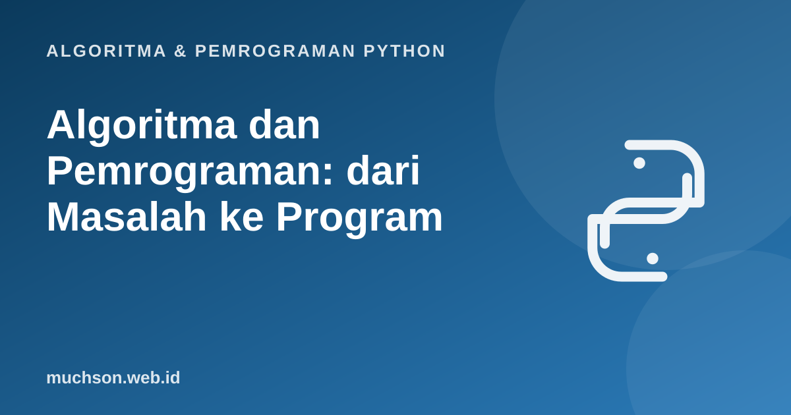

Beranda › Artikel › Algoritma & Pemrograman Python
Algoritma & Pemrograman PythonAlgoritma dan Pemrograman: dari Masalah ke Program
Sebelum menulis satu baris kode pun, ada satu keterampilan yang menentukan seberapa jauh Anda bisa melangkah: menyusun langkah penyelesaian masalah secara tepat. Itulah algoritma. Materi ini membangun fondasinya, dan semua kode di dalamnya dijalankan sungguhan, bukan sekadar contoh di atas kertas.

Setelah membaca dan mencoba materi ini, Anda mampu:
- menjelaskan arti algoritma dan lima sifat yang harus dipenuhinya
- membedakan algoritma, program, dan bahasa pemrograman
- menjelaskan secara garis besar bagaimana komputer menjalankan program Python
- menyusun algoritma sederhana dalam bahasa alami, pseudocode, flowchart, lalu kode Python
- menelusuri jalannya program baris demi baris dan membaca perubahan variabel
Apa itu algoritma?
Algoritma adalah urutan langkah yang berhingga, tidak ambigu, dan dapat dikerjakan untuk menyelesaikan suatu masalah. Resep masakan, rute menuju kampus, dan cara menghitung rata-rata nilai adalah algoritma dalam arti luas. Dalam informatika, definisinya lebih ketat: ia harus bisa dijalankan oleh mesin yang hanya mengerti instruksi sederhana, tanpa perlu "mengira-ngira maksud" penulisnya.
Lima sifat algoritma
| Sifat | Artinya | Contoh pelanggaran |
|---|---|---|
| Input | Nol atau lebih data masukan yang jelas | Langkah memakai angka yang tidak pernah diberikan |
| Output | Minimal satu hasil yang dapat diamati | Menghitung sesuatu tetapi tidak pernah menampilkannya |
| Definiteness (pasti) | Setiap langkah tegas dan tidak ambigu | "Tambahkan secukupnya" atau "ambil nilai yang bagus" |
| Finiteness (berhingga) | Berhenti setelah sejumlah langkah terbatas | Perulangan yang tidak pernah berakhir |
| Effectiveness (efektif) | Setiap langkah cukup sederhana untuk benar-benar dikerjakan | "Cari bilangan prima terbesar" tanpa cara yang dapat dijalankan |
Algoritma bukan program. Algoritma adalah idenya (bebas bahasa), program adalah penulisannya dalam bahasa pemrograman tertentu. Satu algoritma bisa ditulis dalam Python, Java, atau C, dan hasilnya tetap sama.
Dari masalah ke program: lima tahap
Contoh pertama: mencari bilangan terbesar
Masalah: diberi daftar bilangan, tentukan bilangan terbesarnya. Input: daftar bilangan. Output: satu bilangan.
Algoritma dalam bahasa alami:
- Anggap bilangan pertama sebagai yang terbesar sementara.
- Periksa bilangan berikutnya satu per satu.
- Bila bilangan yang diperiksa lebih besar dari yang terbesar sementara, ganti.
- Setelah semua diperiksa, yang terbesar sementara adalah jawabannya.
Terjemahan langsung ke Python:
angka = [7, 3, 19, 4, 11]
terbesar = angka[0]
for x in angka[1:]:
if x > terbesar:
terbesar = x
print("Terbesar:", terbesar)Terbesar: 19
Daripada hanya percaya pada hasilnya, telusuri bagaimana variabel berubah. Tekan Maju berulang kali dan perhatikan nilai terbesar serta x pada panel memori.
Perhatikan bahwa algoritma ini benar untuk daftar apa pun, bukan hanya angka di atas. Itu ciri algoritma yang baik: ia menyelesaikan kelas masalah, bukan satu contoh. Bagaimana bila daftarnya kosong? angka[0] akan menimbulkan error. Kasus tepi seperti ini harus dipikirkan sejak tahap perancangan.
Contoh kedua: algoritma Euclid untuk FPB
Faktor Persekutuan Terbesar (FPB) dua bilangan dapat dicari dengan algoritma yang sudah berusia lebih dari dua ribu tahun: selama pembagi tidak nol, ganti pasangan (a, b) dengan (b, sisa a dibagi b). Ketika b menjadi 0, nilai a adalah FPB. Berikut flowchart-nya.
def fpb(a, b):
while b != 0:
a, b = b, a % b
return a
print(fpb(48, 18))
print(fpb(17, 5))6
1
Bagaimana komputer menjalankan program Python?
Tiga struktur kontrol: pondasi semua algoritma
Kesalahan umum pemula
1. Tuliskan algoritma (bahasa alami) untuk menentukan apakah sebuah bilangan genap atau ganjil. Apa input dan outputnya?
"genap" if n % 2 == 0 else "ganjil".2. Pada algoritma bilangan terbesar, apa yang terjadi bila semua bilangan dalam daftar sama? Apakah hasilnya tetap benar?
x > terbesar tidak pernah terpenuhi, sehingga nilai awal (elemen pertama) tetap menjadi jawaban, dan nilai itu memang yang terbesar.3. Manakah dari ini yang bukan algoritma yang valid, dan sifat apa yang dilanggar? (a) "Selama x tidak sama dengan 0, tambahkan 1 pada x" dengan x awal 5. (b) "Campurkan bahan sampai rasanya enak."
4. Telusuri manual fpb(30, 12) dengan algoritma Euclid. Tuliskan pasangan (a, b) pada tiap langkah.
- Algoritma: langkah berhingga, pasti, dan efektif dengan input dan output yang jelas.
- Program adalah penulisan algoritma dalam bahasa pemrograman tertentu.
- Alur kerja: pahami masalah, rancang algoritma, tulis kode, uji, perbaiki.
- Semua algoritma tersusun dari sekuens, seleksi, dan repetisi.
- Menelusuri variabel langkah demi langkah adalah cara terbaik memahami dan men-debug program.
Tanya jawab
Apakah saya harus pandai matematika untuk belajar algoritma?
Mengapa Python dipakai untuk belajar algoritma?
Apa bedanya pseudocode dan flowchart?
Referensi
- Allen B. Downey, Think Python (edisi ke-3), buku teks terbuka
- MIT OpenCourseWare 6.0001: Introduction to Computer Science and Programming in Python
- Dokumentasi resmi Python: Python Tutorial
- Anany Levitin, Introduction to the Design and Analysis of Algorithms (buku teks)
- Donald E. Knuth, The Art of Computer Programming, Vol. 1: Fundamental Algorithms (definisi dan sifat algoritma)